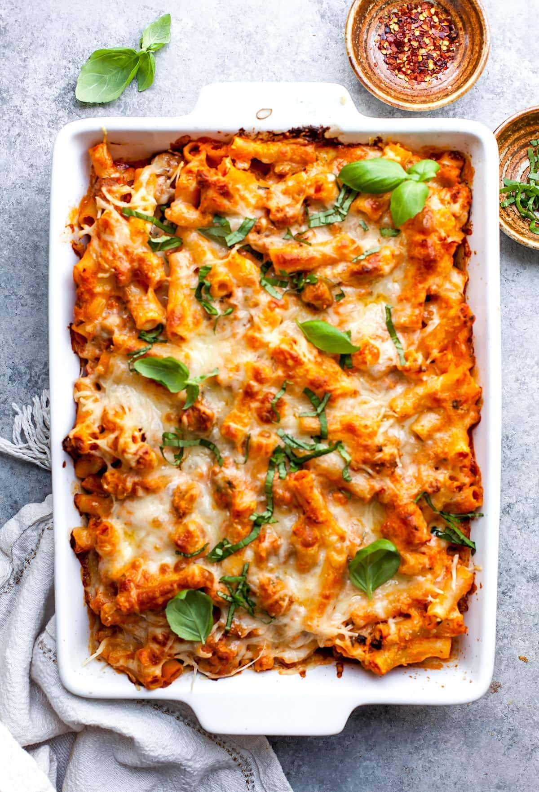

Baked Ziti

Description
This recipe will teach you how to make baked ziti. It
does not take long to prepare and is a healthy, delicious
dish. Additionally, there are only 4 required ingredients.
Ingredients
- 1lb of Ground Sausage
- 1 8oz. bag of Shredded Mozzerella Cheese
- 2 16oz. jars of Pasta Sauce
- 1 box of Ziti
- Heat a pan to medium heat and add ground sausage to the pan.
- Cook the ground sausage until it is lightly browned and set
aside.
- Bring 4 quarts of water to a boil on the stovetop.
- Add the box of pasta to the water and boil for 7-9 minutes,
periodically testing it for desired texture.
- After ziti is finished, remove the water by straining it in
the sink. Set aside.
- Add the sausage, ziti, and pasta sauce into a baking dish and
combine well. Once mixed, evenly distribute the cheese on top.
- Place the dish back in the oven for up to 15 minutes
- Remove the baked ziti from the oven and serve.